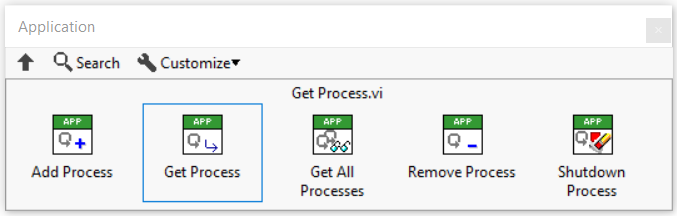

Application
A program is usually made of many small processes, each handling one responsibility of the application. In Triarc, processes are composed into applications.
The Triarc Application
The Application class inherits from the Process class.
Its purpose is to manage the lifecycle of other processes.
The Application has the API shown below, and it also inherits the API of the Process.

| VI | Description |
|---|---|
Add Process.vi |
Adds an initialized process to the application. The application then owns the process and manages its lifecycle. |
Get Process.vi |
Returns an owned process by name. Accepts qualified names for processes in nested applications. |
Get All Processes.vi |
Returns all processes owned by the application. |
Remove Process.vi |
Removes a process from the application and returns it, without stopping or clearing it. |
Shutdown Process.vi |
Stops and clears a process and removes it from the application. |
Register for Broadcasting Events Recursively.vi |
Registers for the broadcasts of the application and all processes in it, including nested applications. |
Each process can reach its owning application with Get Context.vi.
As the Application is itself a Process, applications can be nested.
This lets you build rich architectures with layers of subsystems.
Adding Processes
Initialize a process with Init.vi before adding it with Add Process.vi.
Adding an uninitialized process returns error 9500, and adding a process with the same name as one already in the application returns a duplicate item error.
After a process has been added, the application owns its lifecycle. You do not need to start, stop or clear processes that are owned by an application.
A common place to add processes is the Read Configuration.vi of the application, where the names and the number of processes can be read from the configuration file.
Getting Processes
Get Process.vi returns an owned process by name, as a Process.
Cast it to the expected class to call its API.
A good pattern is to wrap Get Process.vi in a VI that hard codes the name of the process and casts the result to the expected class.
The name and the class are then defined in one place only, which makes them easy to change.
If the process name refers to the application itself, the application is returned.
Qualified Names
Every process has a qualified name: the names of its owners and its own name, joined with ::.
For example, a process Source in an application Motion that is owned by the top level application Main has the qualified name Main::Motion::Source.
To get a process in a nested application, pass its qualified name to Get Process.vi.
If no process with the name is found, Get Process.vi returns error 9512, Could not find requested process.
The qualified name is also used as the location for errors, as the source of log entries, as the window title of views, and as the name of the configuration section of the process.
Lifecycle Management
An application is responsible for the processes it owns, and they follow its lifecycle. When the application is started or stopped, all its owned processes are started or stopped too. When the application is cleared, all its owned processes are cleared.
Processes added while the application is running are not started automatically. This lets you add idle processes to a running application and start them when they are needed.
To remove a process from a running application, use Shutdown Process.vi, which stops, clears and removes the process.
Remove Process.vi only removes the process. You are then responsible for its lifecycle.
The application broadcasts Process Added and Process Removed when processes are added and removed.
Recursion through the Application
Some operations on an Application are applied recursively to the processes it owns, and to the processes in nested applications:
- lifecycle operations (start, stop, clear),
Set Error Handler.vi, which configures the error handler for all owned processes,Add Log Handler.vi, which adds the log handler to all owned processes,Register for Broadcasting Events Recursively.vi.
Error handlers and log handlers also apply to processes that are added to the application after the handler was configured. It is therefore enough to configure them once, on the top level application.